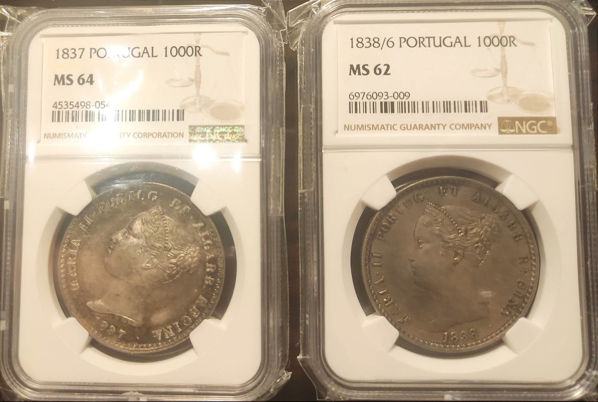
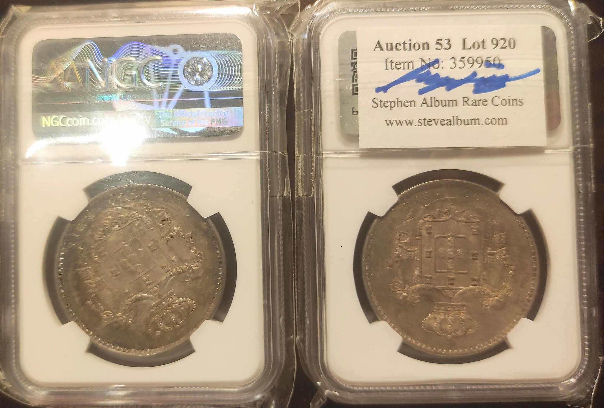

Estas duas moedas foram postadas num grupo do Facebook com o epíteto de "finest mil reis ever graded".
Ao olhar para as fotos, vêem-se duas moedas desfocadas, sem possibilidade de apreciação dos detalhes, encerradas numa urna, com dizeres apostos.
-Qual é o sentido desta partilha?
-A apreciação é dirigida à moeda ou aos dizeres?
-O dono da moeda é coleccionador ou investidor?
-Colecciona grades ou moedas?...
-Existe mercado para urnas com dizeres apostos, sem qualquer moeda?
-Qual o interesse que os generais das hordas góticas dispensariam a esse tipo de coleccionismo?
É que, vam'láver... Se puserem fotografias com boa definição dentro das urnas, poupam-se algumas moedas ao cárcere e podem-se ver os detalhes com mais propriedade.
A não ser que o interesse seja a visualização dos dizeres, caso em que recomendo reduzir o tamanho da fotografia e colocá-la num canto da urna, guardando o lugar de destaque para uma medalha com dizeres apostos. Tipo "émeass79", ou 86.
Assim gerar-se-ia um novo mercado e os coleccionadores até podiam adquirir "émeasses" pela data de nascimento, tipo "carteira bébé" ou assim.
A futilidade é isto. E, com o devido respeito, tem que se chamar pelo nome.